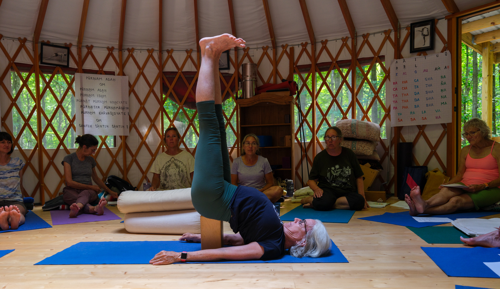
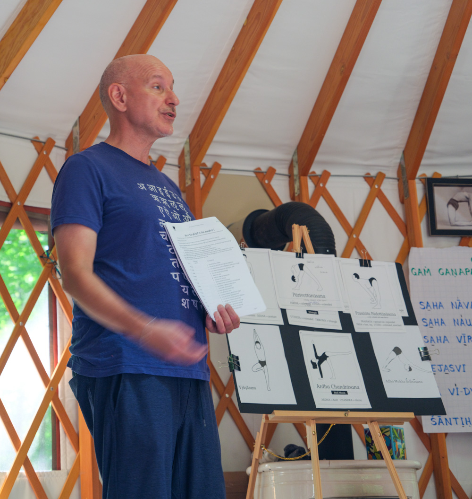
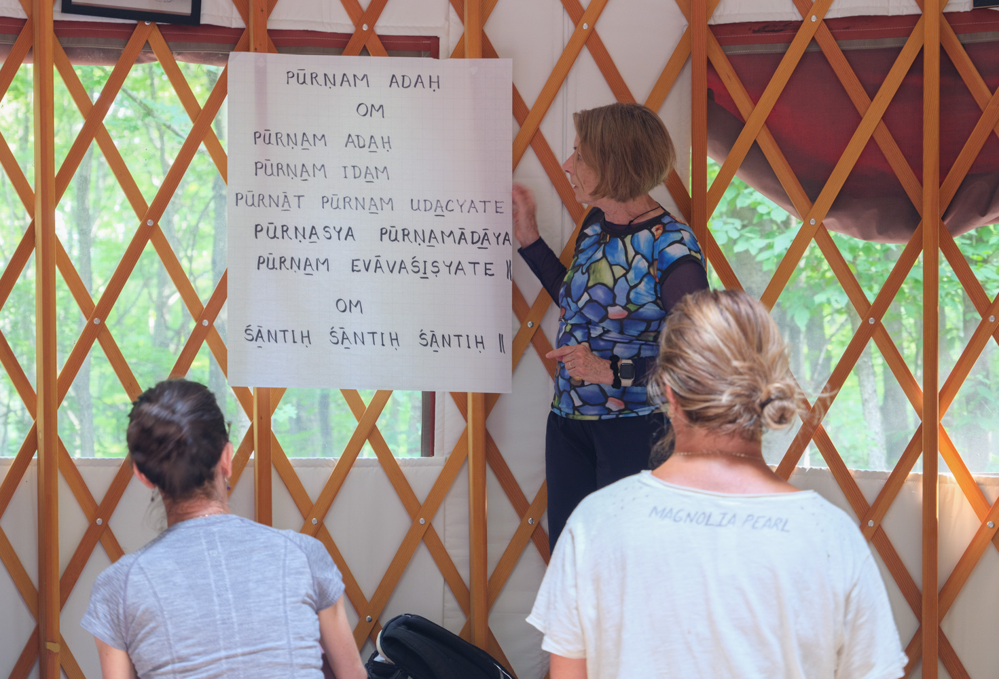
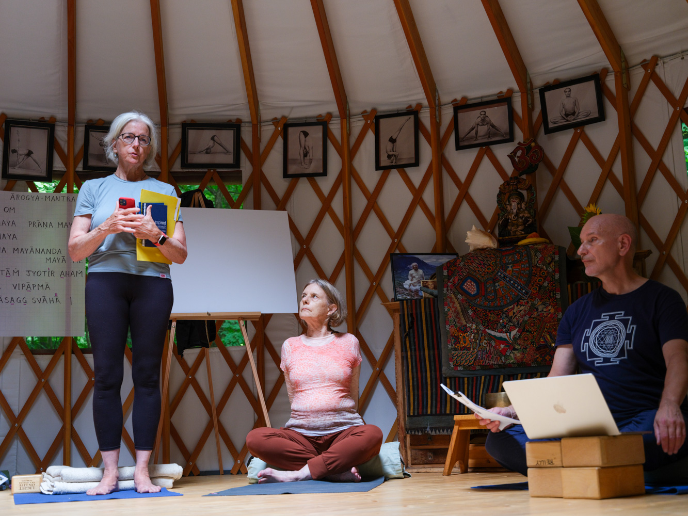

A three-part live Zoom workshop with Mary Reilly, Leslie Freyberg, and Bob Gilbo, with recordings to revisit for 30 days.

Every practitioner knows the moment: the mat is rolled out, the intention is sincere, and the mind has other plans.
In Samādhi Pāda I.17–I.32, among the most psychologically perceptive passages in the tradition, Patañjali gets wonderfully practical. He describes what the mind does as it moves toward stillness, names what derails it, and offers a remedy simple enough to try today and rich enough to study for a lifetime.
This series continues our pāda-by-pāda study of the Yoga Sūtra. Each session begins with an optional āsana practice to settle body and mind. We then meet the text through the vibration of chant, and finally read it closely, with a focused mind and an open heart.
Three Teachers, Three Ways In
The Yoga Sūtra is a record of experience, and it was never meant to be understood by the intellect alone. Each Saturday, three seasoned teachers approach the sūtras from a different angle, one segment after another:

What We’ll Explore
- What actually happens as concentration deepens?
- What does Patañjali say about intensity and commitment in practice?
- What does devotion mean in a text so rigorously analytical?
- What is the role of the mantra OṂ?
- What stands in the way of practice, and what helps?
Who It’s For
Whether you are new to the sūtras or have lived with them for years, you are welcome here. You will hear some Sanskrit terms, but no prior study is assumed. Longtime students may find fresh angles, and newcomers will find a clear path in. The āsana segment is optional, and some prior Iyengar experience (about six months) is recommended if you choose to join it.
Starting from the Beginning?
If you’d like to begin with the opening sūtras, recordings of the chant and philosophy segments from Patañjali’s Opening Gambit (I.1–I.16) are available for first-time study or review. Simply select the option on the registration form to receive links to eight 40-minute recordings. They’re yours to stream online through January 9, 2027. (If you joined us live in 2026, Mary has already sent you access details.)
The Details
- Dates: Saturdays, January 16, 23, and 30, 2027
- Time: Time: 9:00–11:30 am ET
- Format: Live on Zoom, with an optional Q&A at the end of each session
- Included: Separate recordings of each segment (available within 24 hours and for 30 days), chant sheets, study materials, weekly preview emails with readings and reflection prompts, and a moderated online discussion forum
Join us this winter as we explore the steady mind together!
Need to cancel? We’re able to refund your registration through January 6, 2027, less a $35 fee to cover processing and administrative costs. If something unexpected comes up after that, please reach out and we’ll see what we can do.



